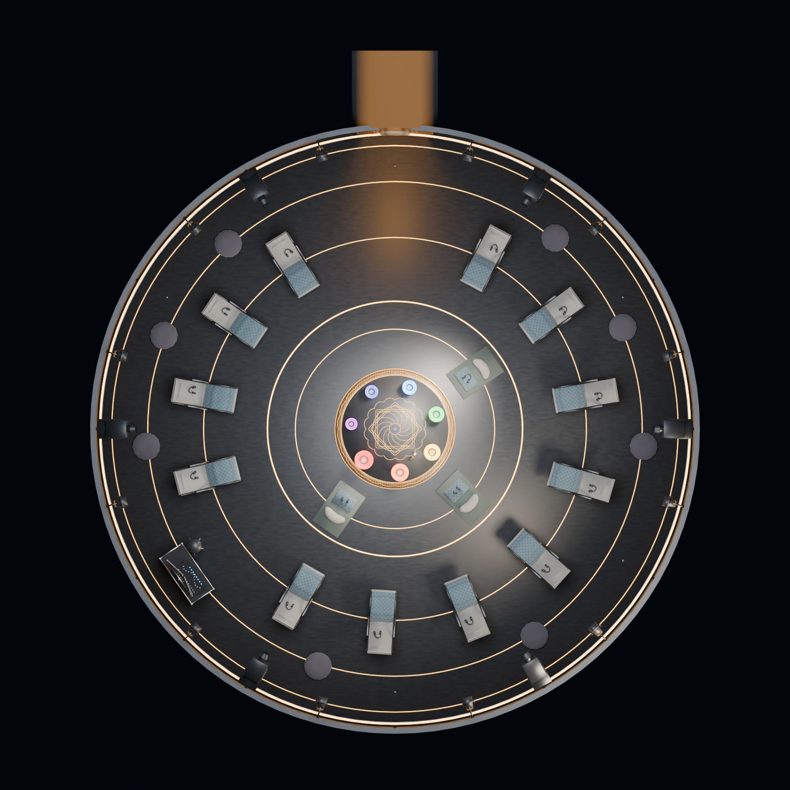
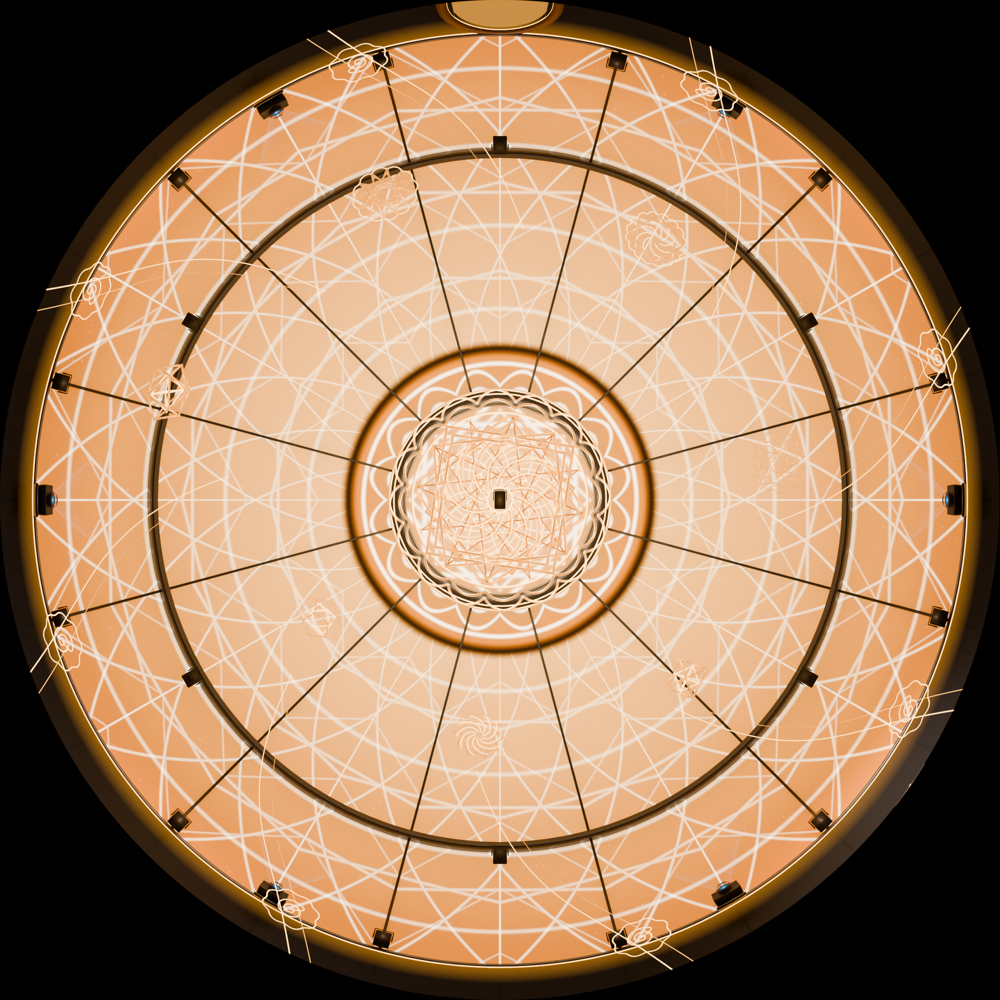

01 · Moroccan Zellige Teal & Gold Domemaster
2048×2048 · 30 fps · 10.0s · 48 kHz AAC
Pre-rendered 2K/4K 180° equidistant domemasters, Blender architectural walkthroughs, and 48 kHz spatial audio stems ready for the Real Ideas 15m Fulldome Spatial R&D residency presentation and website embed.



